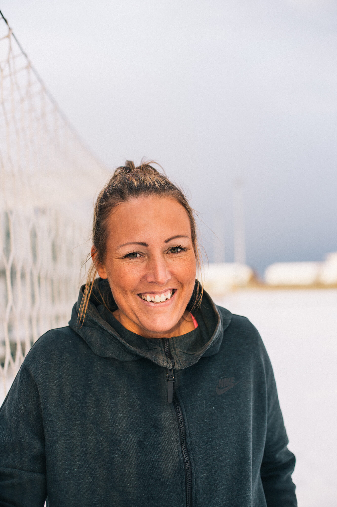
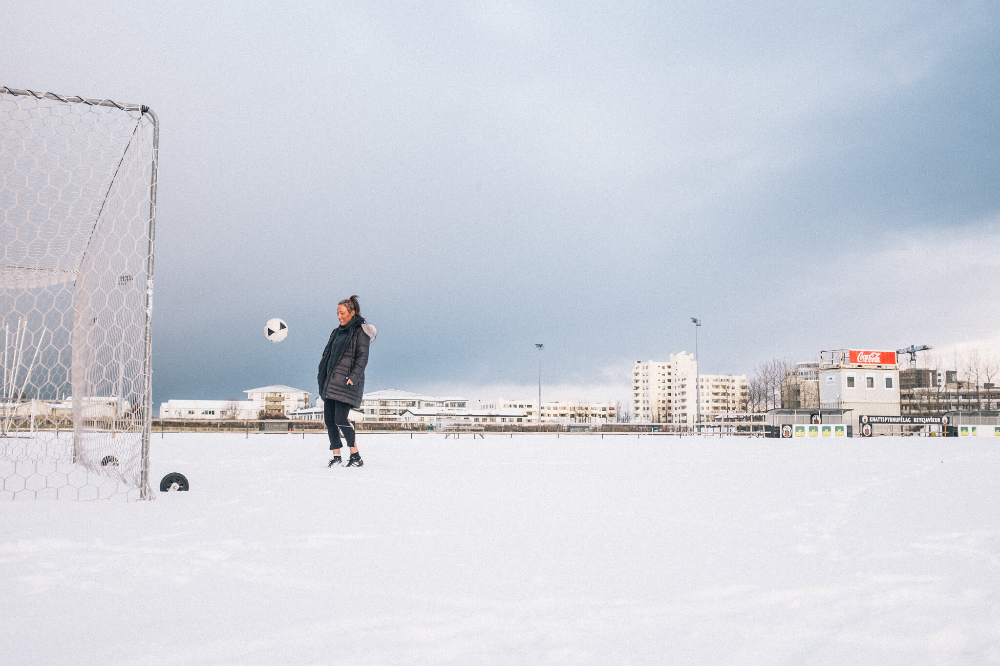
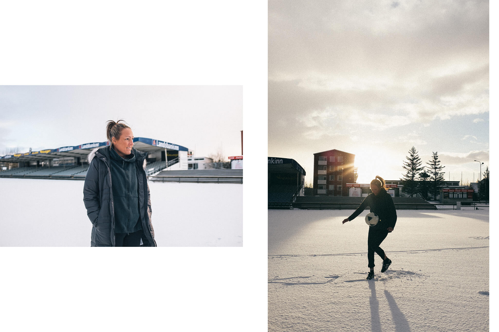
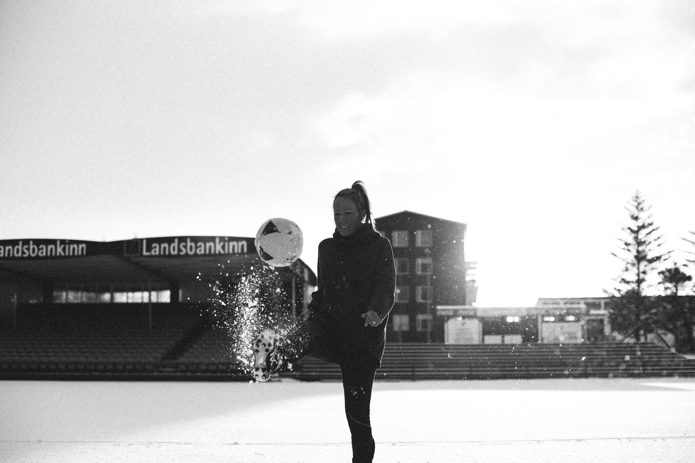
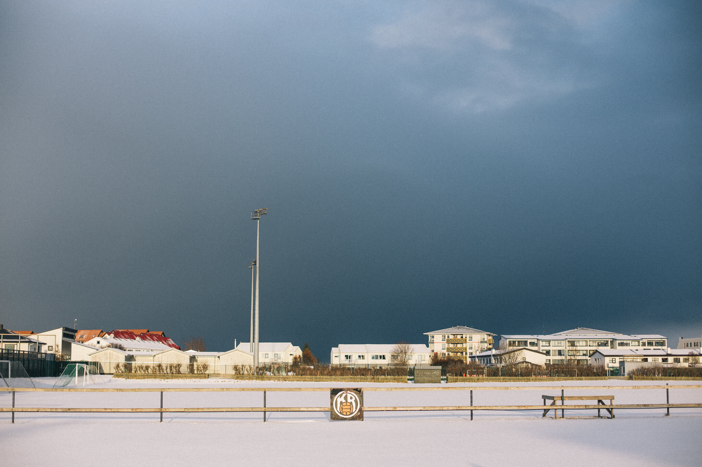

Hrefna Huld Jóhannesdóttir's life took an unexpected turn when she was diagnosed with schizophrenia. The former national soccer team woman put her shoes on the shelf when insomnia and voices in her head led to a diagnosis. She says there is a lot of prejudice in society towards mental illness and the disabled; it lacks education and recognition of diversity.
"When you get sick mentally, it affects you physically. Not everyone realizes that. When you can't catch a moment of sleep but have to wake up for work, or in my case to attend practice, it takes a toll on you physically," says former national team player Hrefna Huld Jóhannesdóttir, who in late 2008 began to experience symptoms of schizophrenia.
Hrefna Huld Jóhannsdóttir has a successful football career behind her with the national team. She was a professional in Norway and is the sixth top scorer in Iceland's top division ever. Hrefna is characterized by relaxation and laughter. She is in a good place today and ready to share her experience with schizophrenia.

"I was starting to be able to run less, I came out worse on endurance tests and simpler things like stretching had become difficult for me. This is a side effect of mental illness," says Hrefna, who subsequently made the decision to move down to the first ward and listen to her body. "I needed to relax and take care of myself. Of course it was sad and painful. I would have liked to end my career differently, but I did what I had to and there are no regrets."
"The way the disease manifests itself is very personal, and therefore there is no one specific manifestation of schizophrenia."
In Hrefna's case, schizophrenia manifests itself in voices she began to hear. "I didn't sleep for days and knew that all was not well. I felt very bad and I was ashamed. Fortunately, I was very quick to realize that I needed to do something about it. The way the disease manifests itself is very personal, and therefore there is no one specific manifestation of schizophrenia. My brother took me to a psychiatric hospital and I am extremely grateful to him today. He is a special guy who was there for me and comforted me, said there will be better times and everything will be fine. After that, we had more visits to the psychiatric ward, which led to a diagnosis of schizophrenia in 2009."

Over the years, Hrefna has visited a psychiatric ward many times on her own initiative. Usually because of the voices she hears and the insomnia that comes with it. "I didn't have the energy for a normal day and struggled to take care of myself and get out of bed. Maybe it's something that not everyone understands, what it's like to not have the energy to face a new day."
When asked, she says she feels stigmatized towards her illness and that society needs to accept that we are not all the same. "Just because I have a mental illness doesn't mean everyone else falls under the category of being normal." At least that's how I see it, we need to accept people as they are. There is a huge stigma in society, people avoid you and are afraid of you. You're not asked for your opinion and everyone doesn't care about your opinion, it doesn't count."

"It's important to surround yourself with people who don't talk to you differently even though you have a mental illness. There is a significant lack of education about these issues and for more people to come forward and share their experiences." The desire to help others spread Hrefna to share her story in Morgunblaðin last year. "I wanted to open the discussion and make people wake up to life." There are countless people who are ashamed of their mental illness because of the stigma they face. It isolates itself due to fear and therein lies the misunderstanding. Shutting down is not a byproduct of mental illness, but the fear of others' reactions. We must be able to discuss these issues openly."

Today, Hrefna lives in Denmark with her husband and younger daughter, while the older one lives in England with her father. Recently, she took on volunteer work in a bakery, and the enthusiasm for training again is kindled. "Actually, I've only attended three times," says Hrefna with a laugh. "In the quiet, I'm looking at getting myself back on the job market."
"It's not a byproduct of mental illness to shut down, but the fear of other people's reactions."
"It took me a long time to find the right drugs and they often come with bad side effects. I have never been better than today and am almost symptom free. I have regular visits from a psychiatric nurse and have found the right medication for me. I am well taken care of and well followed up."

Today, Hrefna is disabled and has been for the past 10 years. "It teaches you to be yourself and you get to know yourself in a new way. You learn not to always be around everyone or in everything. The worst thing is probably the stigma that disabled people face, and the Icelanders are worse off than the Danes. They are more open to diversity than in Iceland, where the attitude is that you don't want to work or are cheating the system. As if it's desirable not to be able to work and you don't do it for the election."
It took time for Hrefna to come to terms with her illness, but today she is doing well and looks to the future with bright eyes. "I have been training full time and I can imagine going back to training or working. I have never been better mentally and feel good. If I have to advise someone in the same situation, I can say that there will always be better times. Get help and take advantage of all the resources available. If you are unhappy with the help you are getting, look elsewhere. Make yourself heard. I know people are not always listened to, but you have your right and claim it. Don't close yourself off. I started to just enjoy the psychiatric ward, I saw it as relaxation. Sometimes it's just about attitude."
The interviewees appeared in the interviews on their own terms. The interview is based on their experiences. It is worth mentioning that experiences are personal and not everyone experiences the same symptoms.
Hugrún would also like to point out the resources that are available to those who believe they are experiencing symptoms of schizophrenia here .